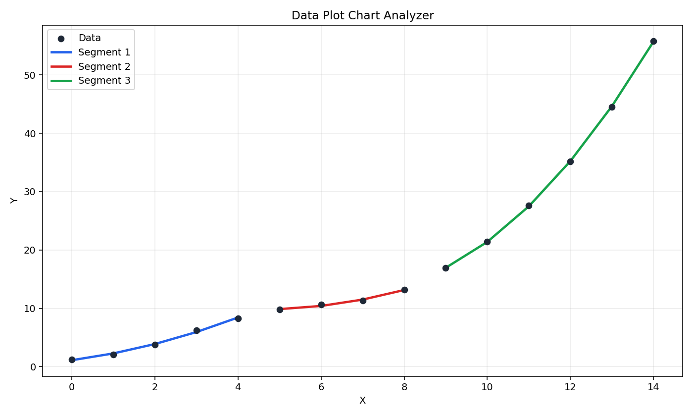

Project
Data Plot Chart Analyzer
Desktop and command-line software for turning raw X/Y data into segmented regression charts, fit metrics, data-quality warnings, and exportable analysis reports.
What it does
- Import CSV, text, Excel, or clipboard data.
- Fit linear, exponential, logarithmic, polynomial, power, and moving-average trendlines.
- Split sorted X/Y data into contiguous fitted segments.
- Export PNG, PDF, SVG, Excel, CSV, TXT, JSON, and project files.
- Flag outliers, weak fits, duplicate X values, uneven spacing, missing units, and possible overfitting.
Example chart

Quick start
Use Python 3.10 or newer. Python 3.12 is recommended.
macOS / Linux
python3.12 -m venv .venv
.venv/bin/python -m pip install --upgrade pip
.venv/bin/python -m pip install -r requirements.txt
.venv/bin/python -m src.guiWindows
py -3.12 -m venv .venv
.\.venv\Scripts\python -m pip install --upgrade pip
.\.venv\Scripts\python -m pip install -r requirements.txt
.\.venv\Scripts\python -m src.guiAfter the app opens, use Data > Load Demo Dataset for a first run, or Data > Import Data File... to load your own file.
Command-line example
python -m src.main sample.csv --output-dir output --segments 3The CLI writes:
chart.pnganalysis_report.txtanalysis_report.jsonextracted_data.csvfit_samples.csv
Downloads and links
Requirements
Python 3.10+. Python 3.12 is recommended for local development.